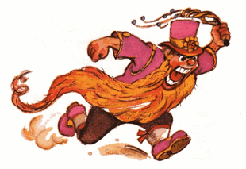
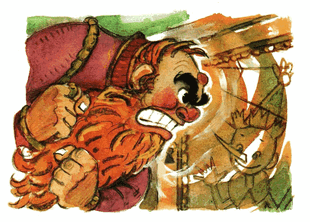

Karabas Barabas, seperti yang kita tahu sebelumnya, usahanya sia-sia ketika membujuk polisi yang mengantuk untuk menangkap Carlo. Tanpa hasil, dia bergegas ke jalan.
Jenggotnya yang tergerai tersangkut-sangkut pada kancing dan payung para pejalan kaki. Dia berdesakan dengan gigi meringis-ringis. Di belakangnya bocah-bocah bersuit siul, melemparkan apel-apel busuk ke punggungnya.
Karabas Barabas mendatangi wali kota. Di siang bolong itu, pak wali kota sedang bersantai di taman, di dekat fontana, hanya mengenakan celana dalam dan minum es limun.
Pak wali kota itu memiliki enam ruas dagu, hidungnya tenggelam di pipinya yang merah jambu. Di belakangnya, di bawah pohon linden, empat polisi sangar melayaninya bergiliran, bergiliran membuka tutup botol berisi limun.
Karabas Barabas bersimpuh sujud di hadapan wali kota, menyeka air mata di wajahnya dengan jenggot, mengerang:
- Saya seorang anak yatim piatu yang malang, saya dilecehkan, dirampas dan dianiaya...
- Siapa kau? dilecehkan? anak yatim piatu? /tanya wali kota, sambil menyeruput/
- Musuh bebuyutan, si pengamen organ tua Carlo. Dia merampas tiga boneka andalanku, dia ingin membakar teater terkenalku, dia akan membakar dan merampok seluruh kota jika tidak ditangkap sekarang juga.
Untuk memperkuat kata-katanya, Karabas Barabas mengambil segenggam koin emas dan memasukkannya ke dalam sandal pak wali kota.
Singkat kata, dia selap-selip lalu bersandiwara, si wali kota yang seolah-olah ketakutan itu memberi perintah pada keempat polisi, di bawah pohon linden:
- Pergi temani anak yatim yang terhormat ini, dan atas nama hukum, lakukan semua yang perlu dilakukan.
Karabas Barabas bergegas ditemani empat polisi ke pondok si Carlo dan berseru:

- Atas nama raja Tarabar, tangkap pencuri dan berengsek-berengsek itu!
Tapi pintunya tertutup rapat. Tidak ada yang menyahut sama sekali dari dalam pondok .
Karabas Barabas memberi perintah:
- Atas nama raja Tarabar: dobrak pintunya!
Polisi-polisi itu mendobrak, bagian engsel pintu yang sudah lapuk itu copot dengan mudah, lantas empat polisi gagah berani yang menghunus pedang itu, jatuh terjerumus kedalam pondok di kolong tangga.
Itu adalah satu menit terakhir setelah Carlo merangkak masuk ke dalam pintu rahasia di dinding.
Dialah yang terakhir lolos, Pintu itu "Cekrek" menutup.
Alunan musik itu berhenti terdengar. Di dalam pondok di kolong tangga hanya tersisa perban-perban kotor berceceran dan selembar kanvas berlukiskan perapian...
Karabas Barabas melompat ke pintu rahasia itu dan menggedor-gedor dengan segenap tinju dan tumitnya: "Dak duk dak duk dak duk!"
Tapi pintu itu sangat kokoh.
Karabas Barabas ancang-ancang kemudian berlari mendobrak pintu itu dengan punggungnya.
Pintu itu tidak bergeming sedikitpun.
Dia menggebrak-gebrak polisi-polisi itu:
- Dobrak pintu terkutuk itu atas nama raja Tarabar!..
Polisi-polisi itu mengaduh-aduh mengeluhkan memar di hidung dan benjolan di kepala mereka masing-masing
- Tidak, tugas di sini sangat berat /mereka menolak dan balik ke wali kota menyampaikan bahwa semuanya sudah dilakukan sesuai hukum, tetapi si pengamen organ tua itu kelihatannya dibantu oleh iblis, soalnya dia bisa menghilang menembus dinding/
Karabas Barabas terjerat oleh jenggotnya sendiri, tersungkur ke lantai dan mulai mengerang, meraung-raung dan berguling-guling, ngamuk-ngamuk seperti orang gila, di dalam pondok kosong di kolong tangga.